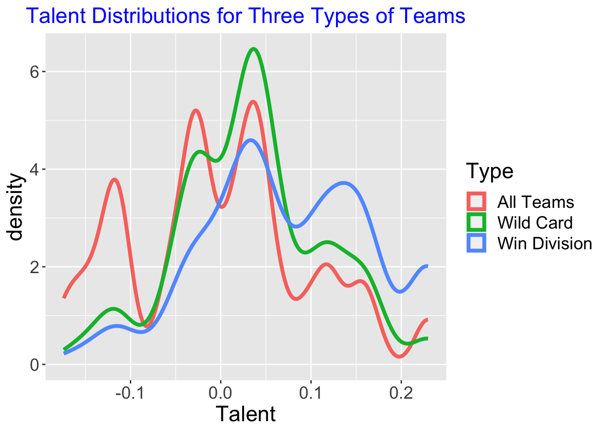

If the rest of the MLB games this season were decided by a coin flip, would the Mariners make the playoffs?
Introduction
Simulates a 2023 season of all 161 games using the Bradley-Terry model.
By repeated simulations, can explore the relationship between talent and season performance.
Talent has been edited so that it is decided by z-scores of average runs score - average runs allowed by each team and then divided by 10.
Main functions
Read in two functions:
one.simulation()performs the simulationprint_standings()prints the division standings of the simulation
Reads in the data:
schedule1 <- read_excel("schedule.xlsx")reads in a two column excel sheet with headers ‘Home’ and ‘Away’ and teams from each game listed belowbattingstats <- read_excel("2022battingstats.xlsx")reads in a excel sheet with 2022 MLB batting statistics for all teamsfieldingstats <- read_excel("fieldingstats2022.xlsx")reads in a excel sheet with 2022 MLB fielding statistics for all teams
Also I am adding several helper functions increasefont() and centertitle() that I will use in ggplot2.
increasefont <- function(Size = 18){
theme(text = element_text(size = Size))
}
centertitle <- function(Color = "blue"){
theme(plot.title =
element_text(colour = Color, size = 18,
hjust = 0.5, vjust = 0.8, angle = 0))
}One simulation
One season simulation with Wins and Losses from each team
| NL East | Wins | Losses | NL Cent | Wins | Losses | NL West | Wins | Losses |
|---|---|---|---|---|---|---|---|---|
| Atlanta Braves | 99 | 62 | Cincinnati Reds | 91 | 70 | Los Angeles Dodgers | 97 | 64 |
| Philadelphia Phillies | 85 | 76 | Milwaukee Brewers | 86 | 75 | San Diego Padres | 86 | 75 |
| Miami Marlins | 81 | 80 | St. Louis Cardinals | 81 | 80 | Colorado Rockies | 85 | 76 |
| New York Mets | 74 | 87 | Chicago Cubs | 74 | 87 | Arizona Diamondbacks | 81 | 80 |
| Washington Nationals | 72 | 89 | Pittsburgh Pirates | 67 | 94 | San Francisco Giants | 79 | 82 |
| AL East | Wins | Losses | AL Cent | Wins | Losses | AL West | Wins | Losses |
|---|---|---|---|---|---|---|---|---|
| Tampa Bay Rays | 93 | 68 | Chicago White Sox | 89 | 72 | Seattle Mariners | 92 | 69 |
| Baltimore Orioles | 88 | 73 | Minnesota Twins | 82 | 79 | Houston Astros | 82 | 79 |
| Toronto Blue Jays | 86 | 75 | Cleveland Guardians | 76 | 85 | Texas Rangers | 68 | 93 |
| New York Yankees | 85 | 76 | Detroit Tigers | 72 | 89 | Oakland Athletics | 66 | 95 |
| Boston Red Sox | 78 | 83 | Kansas City Royals | 69 | 92 | Los Angeles Angels | 66 | 95 |
1000 Simulations
Store the results of 1000 simulated seasons:
all_out <- NULL
for(j in 1:100){
out <- one.simulation()
out$Simulation <- j
all_out <- rbind(all_out, out)
}Talent and probability of making playoffs
Define a new variable Level that is 0 (missed playoffs), 1 (wild-card), or 2 (win division).
Printing percentage of playoffs made from each team over 1000 seasons.
| Team | Percent Playoffs Made |
|---|---|
| Arizona Diamondbacks | 0.29 |
| Atlanta Braves | 0.70 |
| Baltimore Orioles | 0.30 |
| Boston Red Sox | 0.27 |
| Chicago Cubs | 0.35 |
| Chicago White Sox | 0.32 |
| Cincinnati Reds | 0.10 |
| Cleveland Guardians | 0.52 |
| Colorado Rockies | 0.13 |
| Detroit Tigers | 0.17 |
| Houston Astros | 0.76 |
| Kansas City Royals | 0.16 |
| Los Angeles Angels | 0.33 |
| Los Angeles Dodgers | 0.86 |
| Miami Marlins | 0.20 |
| Milwaukee Brewers | 0.48 |
| Minnesota Twins | 0.45 |
| New York Mets | 0.59 |
| New York Yankees | 0.78 |
| Oakland Athletics | 0.08 |
| Philadelphia Phillies | 0.50 |
| Pittsburgh Pirates | 0.11 |
| San Diego Padres | 0.45 |
| San Francisco Giants | 0.52 |
| Seattle Mariners | 0.45 |
| St. Louis Cardinals | 0.66 |
| Tampa Bay Rays | 0.53 |
| Texas Rangers | 0.32 |
| Toronto Blue Jays | 0.56 |
| Washington Nationals | 0.06 |
Level is an ordinal response variable. Using a proportional odds model, model the ordinal response as a function of the team’s talent.
For a range of talent values from -0.9 to 0.9, find the fitted model probability of the three outcomes.
pfit <- polr(Level ~ Talent,
data = all_out)
DF <- data.frame(Talent = seq(-0.9, 0.9,
length.out = 200))
Prob <- predict(pfit, DF, type = "probs")
DF1 <- DF2 <- DF3 <- DF
DF1$Probability <- Prob[, 3]; DF1$Type <- "Division"
DF2$Probability <- Prob[, 2]; DF2$Type <- "Wild Card"
DF3$Probability <- Prob[, 3] + Prob[, 2]
DF3$Type <- "Playoff"
DFall <- rbind(DF1, DF2, DF3)Graph of this division, wild card, and playoff probabilities.
ggplot(DFall, aes(Talent, Probability,
color = Type)) +
geom_line() +
increasefont() +
ggtitle("Probability of Reaching Different Levels") +
centertitle()
Talents of wild card teams and division-winners
Construct density estimates of
- all teams
- teams that win division
- teams that get wild card
data1 <- filter(all_out, Wild.Card == 1) %>%
mutate(Type = "Wild Card")
data2 <- filter(all_out, Winner.Div == 1) %>%
mutate(Type = "Win Division")
data3 <- all_out %>%
mutate(Type = "All Teams")
ggplot(rbind(data1, data2, data3),
aes(Talent, color = Type)) +
geom_density(size = 1.5) +
increasefont() + centertitle() +
ggtitle("Talent Distributions for Three Types of Teams")
How many games to win?
Find the conditional probability of winning division title, of getting wild card, and making the playoffs given you won X games.
all_out %>%
filter(Wins >= 25, Wins <= 45) %>%
group_by(Wins) %>%
summarize(N = n(),
Prob_Div = mean(Winner.Div),
Prob_WC = mean(Wild.Card),
.groups = "drop") -> SPlot smooths of these empirical probabilities.
S %>%
ggplot() +
geom_smooth(aes(Wins, Prob_Div), se = FALSE,
color = "red",
method = "loess") +
geom_smooth(aes(Wins, Prob_WC), se = FALSE,
color = "blue",
method = "loess") +
geom_smooth(aes(Wins, Prob_Div + Prob_WC),
se = FALSE,
color = "black",
method = "loess") +
increasefont() +
ylab("Probability") +
annotate(geom = "text", x = 32, y = 0.75,
label = "Playoffs", size = 7) +
annotate(geom = "text", x = 40.3, y = 0.75,
label = "Division", size = 7,
color = "red") +
annotate(geom = "text", x = 40.8, y = 0.25,
label = "Wild Card", size = 7,
color = "blue") +
ggtitle("How Many Games Does Team Need to Win?") +
centertitle()
````